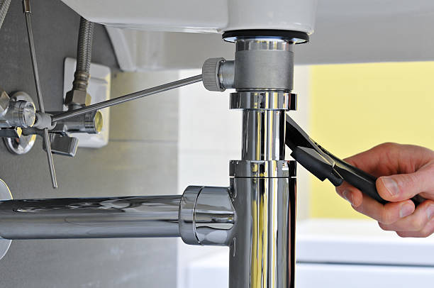

Uncover the Secret to Hassle-Free Repairs with the Highest Rated Plumbers in Frisco
Posted by on 2024-06-07
Uncovering the Secret to Hassle-Free Repairs with the Highest Rated Plumbers in Frisco: A Guide to Exceptional Service
In the bustling city of Frisco, Texas, homeowners and businesses alike understand the importance of maintaining their plumbing systems. The inconvenience and disruption caused by leaks, clogged drains, or malfunctioning fixtures can be significant. However, finding reliable and skilled professionals to address these issues need not be a challenge. This essay reveals the secret to hassle-free repairs through enlisting the services of the highest-rated plumizers in Frisco.
Firstly, it's essential to recognize what sets high-rated plumbers apart from their peers. These professionals are distinguished by their exceptional customer service, expertise, timely response, fair pricing, and quality workmanship. They understand that plumbing problems often come without warning and require immediate attention. Consequently, they are ready to provide prompt solutions that mitigate damage and restore functionality as quickly as possible.
One of the key factors contributing to a seamless repair experience is the availability of emergency services. Top-notch plumbers in Frisco offer 24/7 support because they know that emergencies don't adhere to regular business hours. Whether you have an overflowing toilet at midnight or a burst pipe on a holiday weekend, these adept technicians are just a call away.
Moreover, reputation plays a pivotal role in identifying elite plumbing services. High ratings usually come from consistent positive feedback from satisfied customers who have experienced first-hand the quality of service provided. To uncover this secret ingredient for hassle-free repairs, prospective clients should delve into online reviews on platforms like Yelp or Google My Business. Testimonials can reveal insights about punctuality, communication skills, cleanliness post-repair, and overall satisfaction with completed projects.
Another secret lies within certifications and licensing. Elite plumbers take pride in their qualifications which reflect rigorous training standards met and an aptitude for adhering to local building codes and regulations – ensuring every job is done safely and up-to-code.
Insurance also cannot be overlooked; reputable plumbers carry insurance policies that protect both them and their clients from unforeseen incidents during repair jobs. Homeowners can rest assured knowing that they won't face unexpected liabilities if something goes awry during a repair.
What's more intriguing is how technology has become an integral part of top-tier plumbing services in Frisco. Advanced tools like video pipe inspection cameras allow plumbers to diagnose problems precisely without invasive digging or guessing games – saving time and preventing additional damage.
Scheduling convenience is another cornerstone for stress-free repairs; leading providers incorporate easy-to-use online booking systems alongside traditional phone calls - catering to technologically savvy customers while honoring those who prefer personal interaction over digital communications.
The real magic happens when all these elements combine — when swift response times meet expert problem-solving abilities backed by state-of-the-art tools; when transparent pricing structures align with comprehensive after-service guarantees; when professionalism blends seamlessly with genuine care for client satisfaction — this fusion creates an unparalleled standard for hassle-free plumbing repairs in Frisco.
To truly uncover the secret behind such exceptional service offerings requires engaging with one of these esteemed professionals whenever a plumbing need arises — because experiencing world-class service first-hand transforms what could be stressful disruptions into reassuring encounters marked by efficiency and ease.
In conclusion, homeowners seeking peace-of-mind solutions must turn towards highly regarded local plumbers whose reputations shine brightly amidst community endorsements. By doing so will ensure access not only to impeccable craftsmanship but also an enduring assurance that even under pressing circumstances – your home's integrity remains secured through skillful hands committed entirely towards delivering hassle-free repair experiences every single time.